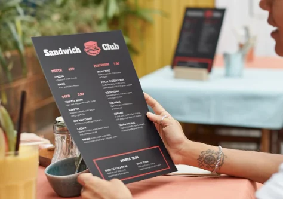
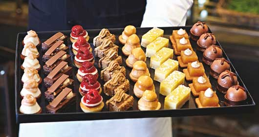

1. Paquetes de Catering
Catering para Bodas: Opciones gourmet para bodas, que incluyen entradas, platos principales, postres y bebidas.
Catering para Eventos Sociales: Paquetes para fiestas de cumpleaños, aniversarios, y otros eventos familiares.

2. Experiencias de Cocina
Clases de Cocina Presenciales: Talleres de cocina temática, desde gastronomía internacional hasta repostería.
Clases de Cocina Virtuales: Sesiones en línea donde los participantes pueden aprender a cocinar desde la comodidad de su hogar.
Eventos de Team Building Culinario: Actividades de cocina en grupo, ideales para fortalecer lazos entre equipos de trabajo.

3. Menús Temáticos
Menú de Temporada: Platos elaborados con ingredientes frescos y de temporada.
Menú Vegetariano y Vegano: Opciones saludables y deliciosas que cumplen con diferentes estilos de vida.
Menú Internacional: Ofrecen platos inspirados en cocinas de todo el mundo, como italiana, japonesa, mexicana, etc.
4. Servicios Adicionales
Alquiler de Equipos y Decoración: Alquiler de carpas, mobiliario, vajilla, y elementos decorativos temáticos.
Servicio de Barra Libre: Opciones de coctelería y barra libre para eventos, con o sin bartender.
Pastelería Personalizada: Tartas, pasteles y postres hechos a medida para eventos especiales.
5. Eventos a Medida
Planeación de Bodas: Servicio completo de organización de bodas, desde la planificación hasta la ejecución.
Fiestas Temáticas: Organización de eventos temáticos, como fiestas de disfraces, noches de casino, etc.
Eventos Corporativos: Organización de conferencias, lanzamientos de productos, y eventos de networking.
6. Box de Catering
Kits de Cocina: Kits con ingredientes y recetas para recrear en casa las experiencias culinarias ofrecidas por la empresa.
Cajas Sorpresa: Cajas temáticas con sorpresas gastronómicas.
Carritos Catering: Estaciones móviles de catering para eventos especiales.
7. Productos Personalizados
Kits de Cocina: Kits con ingredientes y recetas para recrear en casa las experiencias culinarias ofrecidas por la empresa.
Regalos Corporativos: Cestas y productos gourmet personalizados para empresas y clientes.
Recetarios Exclusivos: Libros o e-books con recetas de autor creadas por los chefs de la empresa.
8. Consultoría Gastronómica
Asesoría para Eventos: Servicio de consultoría para ayudar a planificar y ejecutar eventos gastronómicos.
Desarrollo de Menús: Ayuda en la creación de menús personalizados para restaurantes, hoteles o eventos privados.
Formación para Chefs y Equipos de Cocina: Programas de formación y desarrollo para personal de cocina.